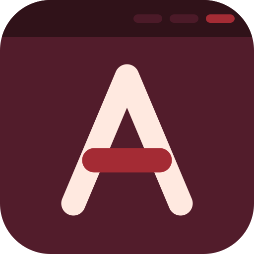

Describe Tu Proyecto
Arrastra aquí un archivo .amatsuka para verlo tal cual lo envió la persona.
Sin servidor: aquí marcas cada solicitud y exportas estados.json. Lo subes a la carpeta estado/ de tu página y la persona lo ve al escribir su código en /estado/. Cada vez que cambies un estado, vuelve a exportarlo y a subirlo.
estados.json
estado/
/estado/
Tus solicitudes se guardan solo en este navegador. Haz un respaldo de vez en cuando.